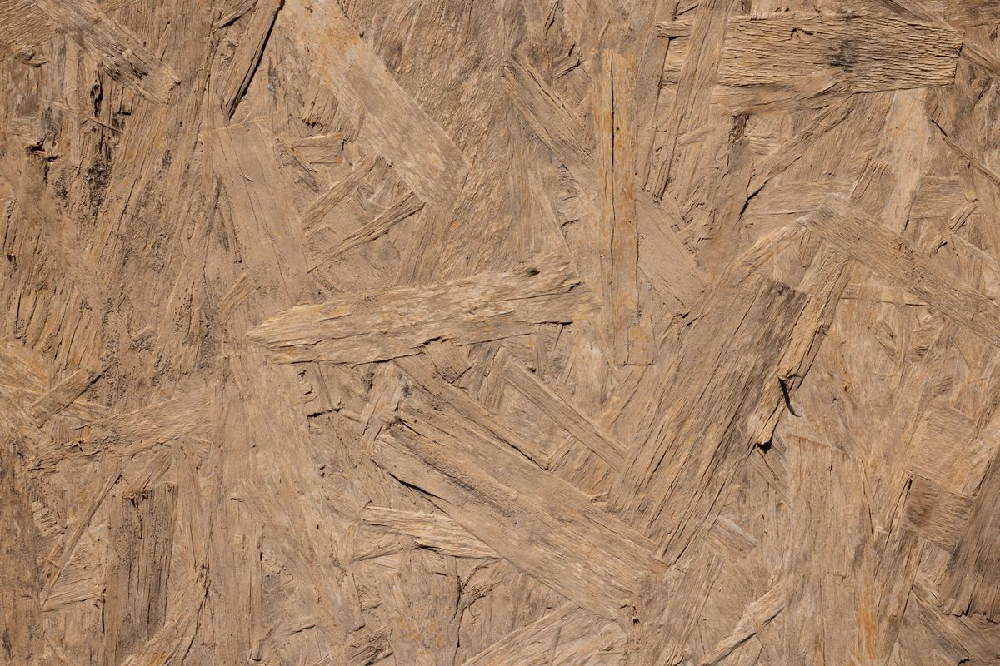

Инструкция
ИнструкцияПерегородка из гипсокартона своими руками
Пошаговая технология монтажа каркасной перегородки.
Материалы
Волокнистый негорючий утеплитель из расплава горных пород (базальта).
Другие названия: минвата, базальтовая вата, каменная вата
Учебный каталог; условия измерения и паспорт не указаны. Это не проектные характеристики.
| Изделие | Атрибут | Значение | Единица | Источник |
|---|---|---|---|---|
| Минеральная вата Лайт | Плотность | 35 | кг/м³ | Учебный каталог |
| Минеральная вата Лайт | Теплопроводность | 0.04 | Вт/(м·К) | Учебный каталог |
| Минеральная вата Лайт | Срок службы | 50 | лет | Учебный каталог |
ИнструкцияПошаговая технология монтажа каркасной перегородки.
 Справочная статья
Справочная статьяСвойства, плотность и области применения каменной ваты.
 Сравнение
СравнениеСравнение двух популярных утеплителей для мокрого фасада.
 Инструкция
ИнструкцияПравильный пирог утеплённой скатной кровли.

Вопрос-ответКакой брус выбрать для бани и чем утеплять парную.
Обзор нормативаЧто означают обозначения НГ и Г1–Г4.
 Вопрос-ответ
Вопрос-ответКакие материалы лучше защищают от шума соседей.
ИнструкцияИз чего состоит навесной вентилируемый фасад.
Справочная статьяИз каких материалов строят каркасный дом.
СравнениеДва похожих рулона выполняют разные задачи. Понятная схема утеплённой скатной кровли.
ИнструкцияКаркас, заполнение, обшивка и примыкания: четыре части работающей системы.
Вопрос-ответМягкий мат, фасадная плита и плита под стяжку не являются взаимозаменяемыми.
СравнениеЧто показывает формула R = δ / λ и почему расчёт слоя не заменяет расчёт всей стены.